vignettes/levi.Rmd
levi.RmdThe levi (Landscape Expression Visualization Interface) is a package for the R environment that integrates gene expression data with biological networks, generating a topographic landscape where elevated regions correspond to differentially expressed genes and their network neighbors.
levi is based on two prior tools: Viacomplex (Castro et al. (2009)), written in Fortran using the Dislin library, and Galant (Camilo et al. (2013)), a Cytoscape plugin.
Two files are required to use levi: a gene expression file and a biological network file. Alternatively, results from differential expression tools (DESeq2, edgeR, limma) or single-cell tools (Seurat) can be passed directly as R objects.
Web interface (no installation required): An
interactive demo is available via Binder at:
https://mybinder.org/v2/gh/jrybarczyk/levi/master?urlpath=shiny/inst/shiny/
The expression file must contain a column with gene identifiers (Gene Symbol, Entrez ID, Ensembl, etc.) and at least one column with expression values (e.g., normalized counts, log2 fold-change).
If some network genes have no expression value, levi assigns a neutral value (0.5), representing no change, and generates a log file listing the missing genes.
Expression data can be obtained from:
levi supports the following network file formats:
| Extension | Format |
|---|---|
dat |
Medusa (DAT) (Hooper and Bork 2005) |
dyn |
RedeR (DYN) (Castro et al. 2012) |
net |
Pajek (NET) (Batagelj and Mrvar 1998) |
stg |
STRING / STITCH (Szklarczyk et al. 2021) |
Network interaction data can be obtained from:
Every format above carries a position for each node, because levi draws its landscape over the plane the network occupies. Interaction databases and collaborators usually hand over something simpler: a list of pairs, with no coordinates at all.
leviFromEdges() computes them with
igraph (Csárdi and Nepusz
2006) and returns the two tables levi() expects:
## Warning: replacing previous import 'S4Arrays::makeNindexFromArrayViewport' by
## 'DelayedArray::makeNindexFromArrayViewport' when loading 'SummarizedExperiment'
interactions <- data.frame(
from = c("HUB", "HUB", "HUB", "HUB", "N1", "N2", "N3", "N4"),
to = c("N1", "N2", "N3", "N4", "N5", "N6", "N7", "N8"),
stringsAsFactors = FALSE)
set.seed(42) # force-directed layouts are stochastic
net <- leviFromEdges(interactions, layout = "kk")## Network laid out with 'kk': 9 nodes, 8 edges.
head(net$nodes)## name x y
## 1 HUB 50.50000 50.50000
## 2 N1 38.79074 76.13341
## 3 N2 24.86659 38.79074
## 4 N3 62.20926 24.86659
## 5 N4 76.13341 62.20926
## 6 N5 27.88855 100.00000
expression <- data.frame(
ID = c("HUB", paste0("N", 1:8)),
Test = c(200, 200, 200, 200, 200, 5, 5, 5, 5),
Control = c(10, 10, 10, 10, 10, 200, 200, 200, 200))
res_edges <- levi(
networkCoordinatesInput = net$nodes,
networkInteractionsInput = net$edges,
fileTypeInput = "stg",
expressionInput = expression,
geneSymbolInput = "ID",
readExpColumn = readExpColumn("Test-Control"),
resolutionValueInput = 30,
smoothValueInput = 50)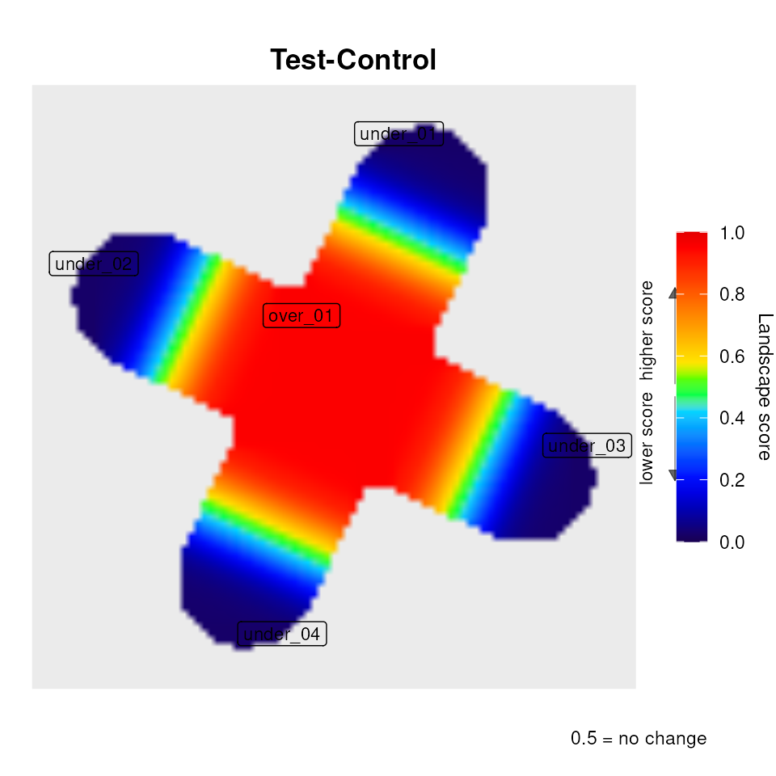
res_edges$scores[, c("Gene", "LandscapeScore", "Rank")]## Gene LandscapeScore Rank
## 1 HUB 0.9524 1
## 2 N1 0.9027 2
## 3 N2 0.9027 3
## 4 N3 0.9027 4
## 5 N4 0.9027 5
## 6 N5 0.0854 6
## 7 N6 0.0854 7
## 8 N7 0.0854 8
## 9 N8 0.0854 9A caveat worth keeping in mind: the layout is an analytical choice, not only an aesthetic one. The same expression values arranged differently give a different landscape, because levi reads neighbourhoods. Where a curated layout already exists, prefer it over a computed one.
The GUI runs locally via Shiny and covers the same analysis as script
mode: it calls levi() with the parameters chosen in the
side panel, so a landscape built in the interface and one built from a
script agree, p-values included.
library(levi)
LEVIui(browser = TRUE) # Opens in the system browser
LEVIui(browser = FALSE) # Opens inside RStudio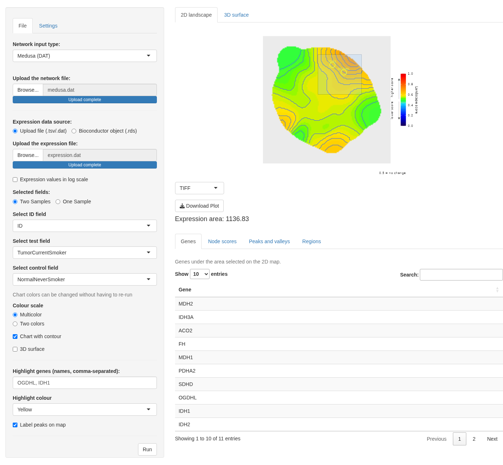
The side panel has two tabs. File holds everything needed for a run; Settings holds the parameters that change the landscape and the test.
File tab
.rds
(SummarizedExperiment, SingleCellExperiment or
ExpressionSet). For a file, tick Expression values
in log scale when the columns are log2 values and choose
Two Samples (test against control) or One
Sample. For an object, choose the assay, the condition column
and the test and control levels.Settings tab
levi(). Contrast sets how tightly the
silhouette hugs the network, resolution the grid size, smoothing the
width of the Gaussian kernel and zoom the margin around the network.
Their ranges and effects are tabulated in
vignette("levi_guide").The main panel shows the figure in two tabs and the tables in four.
leviSave3D(camera = ...) to reproduce it from a
script.result$scores of
script mode.result$peaks.result$regions$summary.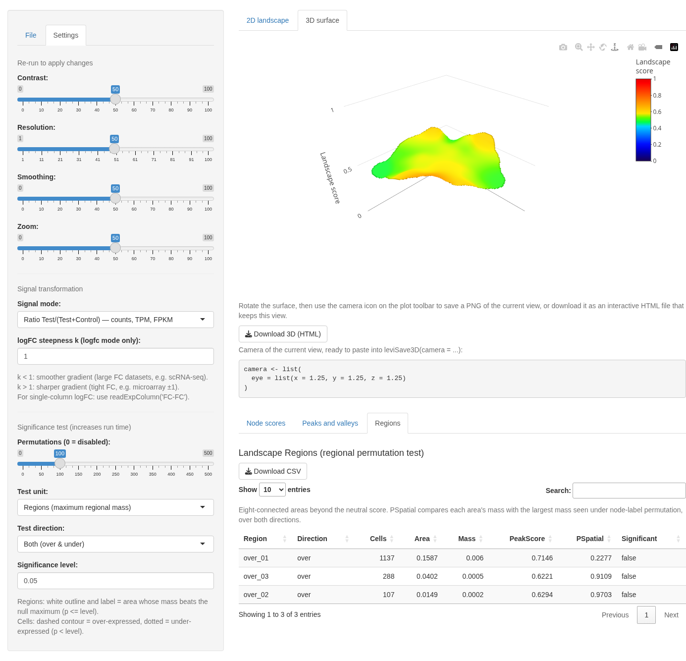
A busy indicator is shown at the top of the page while the landscape or the permutation test is being computed.
library(levi)
template_network <- file.path(system.file(package = "levi"), "extdata",
"medusa.dat", fsep = .Platform$file.sep)
template_expression <- file.path(system.file(package = "levi"), "extdata",
"expression.dat", fsep = .Platform$file.sep)
multicolor <- levi(
networkCoordinatesInput = template_network,
expressionInput = template_expression,
fileTypeInput = "dat",
geneSymbolInput = "ID",
readExpColumn = readExpColumn("TumorCurrentSmoker-NormalNeverSmoker"),
contrastValueInput = 50,
resolutionValueInput = 20,
zoomValueInput = 50,
smoothValueInput = 5,
contourLevi = TRUE
)## There are 1 nodes without expression value, see log in path: /tmp/RtmpFp7ZSj/TumorCurrentSmoker-NormalNeverSmoker/levi.log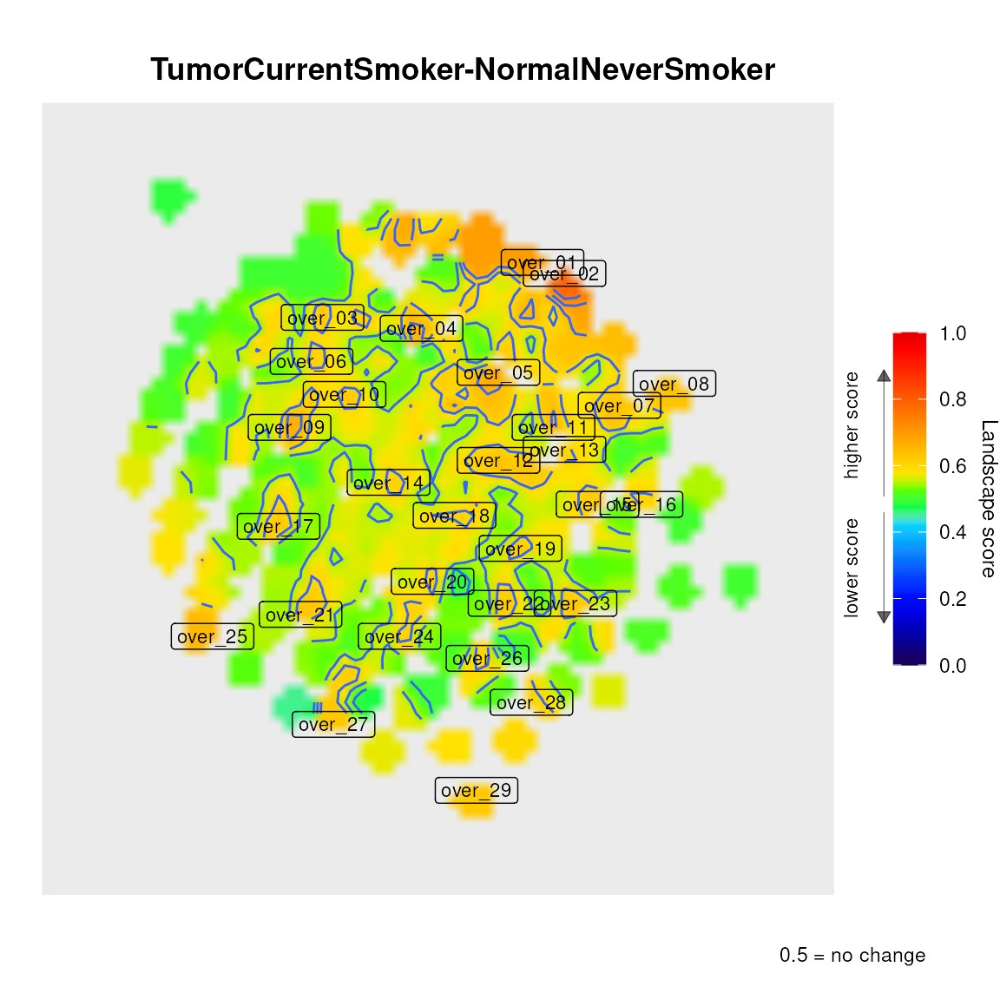
The example dataset contains lung adenocarcinoma microarray data (Landi et al. 2008) comparing tumor tissue from current smokers against normal tissue from never-smokers. Elevated regions (warm colors) represent network areas where genes are more expressed in tumors, while depressed regions (cool colors) represent down-regulated areas. The contour lines delineate boundaries between expression zones, analogous to elevation contours on a topographic map.
The readExpColumn() function allows multiple comparisons
to be processed in a single call:
base <- readExpColumn(
"TumorCurrentSmoker-NormalNeverSmoker",
"TumorFormerSmoker-NormalFormerSmoker"
)
levi(
networkCoordinatesInput = template_network,
expressionInput = template_expression,
fileTypeInput = "dat",
geneSymbolInput = "ID",
readExpColumn = base,
setcolor = "pink_green",
contourLevi = FALSE
)## There are 1 nodes without expression value, see log in path: /tmp/RtmpFp7ZSj/TumorCurrentSmoker-NormalNeverSmoker/levi.log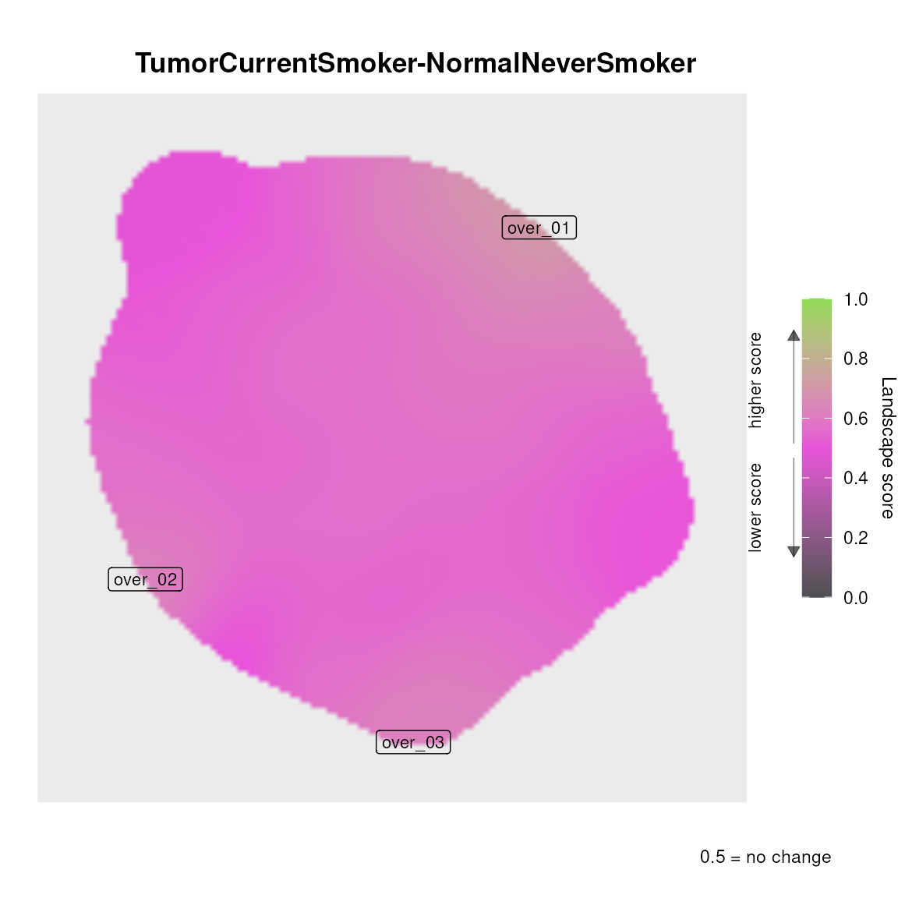
## There are 1 nodes without expression value, see log in path: /tmp/RtmpFp7ZSj/TumorFormerSmoker-NormalFormerSmoker/levi.log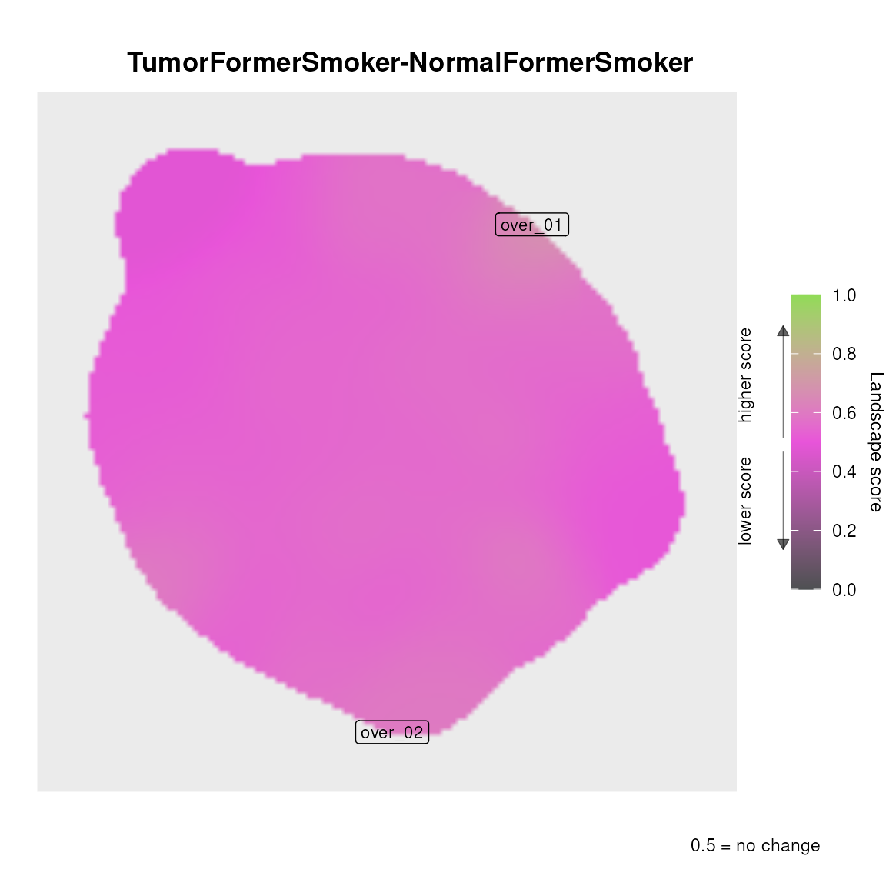
signal_mode)
The signal_mode parameter controls how raw expression
values are converted to the landscape score in
.
Choose based on your data type:
signal_mode |
Formula | Score 0.5 means | Best for |
|---|---|---|---|
"ratio" (default) |
Test / (Test + Control) |
Test ≈ Control | Raw counts, TPM, FPKM, linear proteomics LFQ |
"logfc" |
1 / (1 + e^{−k · logFC}) |
logFC = 0 (no change) | RMA microarray, VST/rlog DESeq2, log2-proteomics, scRNA-seq avg_log2FC |
"zscore" |
pnorm(z) where
z = (logFC − μ) / σ
|
Mean logFC of support points | Relative position within a comparison |
Quick guide by experiment type:
| Data type | signal_mode |
expressionLog |
Input columns |
|---|---|---|---|
| Raw counts (RNA-seq) | "ratio" |
FALSE |
mean_test, mean_ctrl |
| TPM / FPKM | "ratio" |
FALSE |
mean_test, mean_ctrl |
| Microarray RMA (log2) | "logfc" |
FALSE |
log2_test, log2_ctrl |
DESeq2 log2FoldChange only |
"logfc" |
FALSE |
readExpColumn("log2FoldChange-log2FoldChange") |
edgeR / limma logFC only |
"logfc" |
FALSE |
readExpColumn("logFC-logFC") |
scRNA-seq avg_log2FC
|
"logfc" +
logfc_k = 0.5
|
FALSE |
readExpColumn("avg_log2FC-avg_log2FC") |
scRNA-seq pct.1 / pct.2
|
"ratio" |
FALSE |
pct.1, pct.2 |
| Proteomics log2 LFQ | "logfc" |
FALSE |
log2_LFQ_test, log2_LFQ_ctrl |
| Multi-condition / heterogeneous | "zscore" |
any | Test, Control |
The logfc_k parameter controls the steepness of the
sigmoid in "logfc" mode:
k = 0.3–0.5 — large fold-change
datasets (scRNA-seq often reaches ±5)k = 1 (default) — typical RNA-seq or
proteomics (±2)k = 2–3 — tight microarray
fold-changes (±0.5–1)
# Microarray RMA — keep log2 scale, use logfc mode
res_rma <- levi(
networkCoordinatesInput = template_network,
expressionInput = rma_expression_df, # columns: ID, Tumor_log2, Normal_log2
fileTypeInput = "dat",
geneSymbolInput = "ID",
readExpColumn = readExpColumn("Tumor_log2-Normal_log2"),
signal_mode = "logfc",
expressionLog = FALSE # keep in log2 scale; no 2^ transform
)
# scRNA-seq — single-column avg_log2FC with reduced steepness
res_sc <- levi(
networkCoordinatesInput = template_network,
expressionInput = seurat_markers_df, # column: GeneID, avg_log2FC
fileTypeInput = "dat",
geneSymbolInput = "GeneID",
readExpColumn = readExpColumn("avg_log2FC-avg_log2FC"),
signal_mode = "logfc",
logfc_k = 0.5 # softer gradient for large FC values
)
# DESeq2 log2FoldChange as single column
res_deseq <- levi(
networkCoordinatesInput = template_network,
expressionInput = leviFromDESeq2(dds_result),
fileTypeInput = "dat",
geneSymbolInput = "GeneID",
readExpColumn = readExpColumn("log2FoldChange-log2FoldChange"),
signal_mode = "logfc"
)The recipes above assume objects from your own analysis. The package
ships a small log2-scale dataset so the "logfc" recipe can
be run as it stands:
logfc_net <- system.file("extdata", "logfc_network.dat", package = "levi")
logfc_expr <- system.file("extdata", "logfc_expression.dat", package = "levi")
# Control is 8 for every gene and Test runs from 3 to 10, so the logFC
# spans -5 to +2 on the log2 scale.
res_logfc <- levi(
networkCoordinatesInput = logfc_net,
expressionInput = logfc_expr,
fileTypeInput = "dat",
geneSymbolInput = "ID",
readExpColumn = readExpColumn("Test-Control"),
resolutionValueInput = 40,
signal_mode = "logfc",
expressionLog = FALSE # already log2; no back-transform
)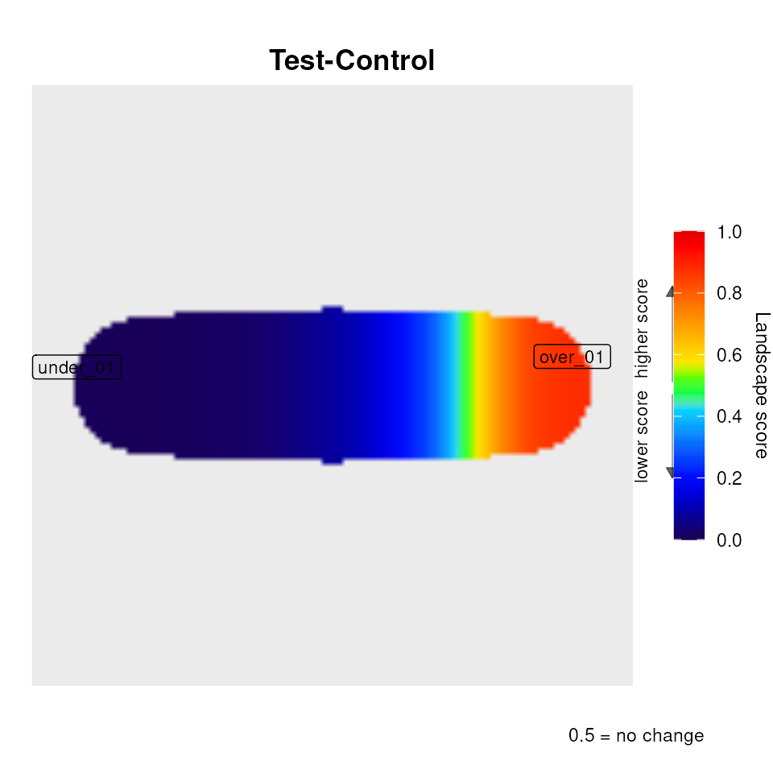
res_logfc$scores[, c("Gene", "LandscapeScore", "Rank")]## Gene LandscapeScore Rank
## 1 GF 0.8230 1
## 2 GE 0.3309 2
## 3 GD 0.1008 3
## 4 GC 0.0663 4
## 5 GB 0.0183 5
## 6 GA 0.0077 6Only GF sits above the neutral 0.5, which is the single
gene whose test value exceeds the control.
The setcolor parameter selects the color palette.
Available options are:
| Value | Description |
|---|---|
"default" |
20-level multicolor (blue → red) |
"purple_pink" |
Two-color: purple → pink |
"green_blue" |
Two-color: green → blue |
"blue_yellow" |
Two-color: blue → yellow |
"pink_green" |
Two-color: pink → green |
"orange_purple" |
Two-color: orange → purple |
"green_marine" |
Two-color: green → marine |
When the plotly package is installed,
levi can generate an interactive 3D surface plot in
addition to the standard 2D landscape. The user can rotate, zoom, and
inspect expression values interactively.
install.packages("plotly")
levi(
networkCoordinatesInput = template_network,
expressionInput = template_expression,
fileTypeInput = "dat",
geneSymbolInput = "ID",
readExpColumn = readExpColumn("TumorCurrentSmoker-NormalNeverSmoker"),
plot3d = TRUE
)The 3D surface uses the same color palette as the 2D plot. Peaks in the landscape correspond to network sub-regions with high expression in the test condition; valleys correspond to down-regulated regions.
levi accepts results directly from standard differential expression workflows: DESeq2 (Love et al. 2014), edgeR (Robinson et al. 2010), limma (Ritchie et al. 2015) and Seurat (Hao et al. 2021). This eliminates the need to manually prepare input files.
library(DESeq2)
library(levi)
# After running DESeq2 analysis:
res <- results(dds, contrast = c("condition", "Tumor", "Normal"))
expr_df <- leviFromDESeq2(res, gene_col = "GeneSymbol")
levi(
expressionInput = expr_df,
networkCoordinatesInput = template_network,
fileTypeInput = "dat",
geneSymbolInput = "GeneSymbol",
readExpColumn = readExpColumn("log2FoldChange-log2FoldChange"),
signal_mode = "logfc"
)
library(edgeR)
library(levi)
fit <- glmQLFit(dge, design)
qlf <- glmQLFTest(fit, coef = 2)
expr_df <- leviFromEdgeR(qlf, gene_col = "GeneSymbol")
levi(
expressionInput = expr_df,
networkCoordinatesInput = template_network,
fileTypeInput = "dat",
geneSymbolInput = "GeneSymbol",
readExpColumn = readExpColumn("logFC-logFC"),
signal_mode = "logfc"
)
library(limma)
library(levi)
fit2 <- eBayes(fit)
expr_df <- leviFromLimma(fit2, coef = 1, gene_col = "GeneSymbol")
levi(
expressionInput = expr_df,
networkCoordinatesInput = template_network,
fileTypeInput = "dat",
geneSymbolInput = "GeneSymbol",
readExpColumn = readExpColumn("logFC-logFC"),
signal_mode = "logfc"
)Each adapter also accepts a plain data.frame carrying
the columns the corresponding tool produces. That makes the conversion
reproducible here, and is handy for testing a pipeline before installing
the full stack:
# A DESeq2 results table has baseMean and log2FoldChange.
res_de <- data.frame(
baseMean = c(1200, 1100, 900),
log2FoldChange = c(4.3, 4.1, -5.3),
row.names = c("HUB", "N1", "N5"))
leviFromDESeq2(res_de, gene_col = "GeneID")## GeneID baseMean log2FoldChange
## 1 HUB 1200 4.3
## 2 N1 1100 4.1
## 3 N5 900 -5.3
# An edgeR topTags table has logFC and logCPM.
tt_edger <- data.frame(
logFC = c(4.3, -5.1),
logCPM = c(10.2, 9.8),
row.names = c("HUB", "N5"))
leviFromEdgeR(tt_edger, gene_col = "GeneID")## GeneID logCPM logFC
## 1 HUB 10.2 4.3
## 2 N5 9.8 -5.1
# A limma topTable has logFC and AveExpr.
tt_limma <- data.frame(
logFC = c(4.3, -5.1),
AveExpr = c(8.1, 7.7),
row.names = c("HUB", "N5"))
leviFromLimma(tt_limma, gene_col = "GeneID")## GeneID AveExpr logFC
## 1 HUB 8.1 4.3
## 2 N5 7.7 -5.1
# A Seurat FindMarkers table has avg_log2FC and pct.2, which become
# Test and Control.
mk_seurat <- data.frame(
avg_log2FC = c(2.5, -1.8),
pct.2 = c(0.3, 0.8),
row.names = c("HUB", "N5"))
leviFromSeurat(mk_seurat, gene_col = "GeneID")## GeneID Control Test
## 1 HUB 0.3 2.5
## 2 N5 0.8 -1.8Every levi() call returns a ranked table of landscape
scores invisibly. A score close to 1 means the gene’s network
neighborhood is strongly up-regulated in the test condition; close to 0
means strongly down-regulated.
The network weights the landscape by degree. Each
edge adds a support point at its midpoint carrying the mean of its two
endpoints, so a hub with twenty interactions surrounds itself with
twenty extra points while a leaf adds one. The smoothed surface around a
hub is therefore dominated by the hub and its neighbours, and a
moderately changed hub can look more prominent than a strongly changed
peripheral gene. The permutation tests keep the network fixed, so this
weighting is part of their null and does not bias the p-values; it does
affect what the figure emphasises, and result$scores should
be read with the node’s degree in mind.
result <- levi(
networkCoordinatesInput = template_network,
expressionInput = template_expression,
fileTypeInput = "dat",
geneSymbolInput = "ID",
readExpColumn = readExpColumn("TumorCurrentSmoker-NormalNeverSmoker"),
contrastValueInput = 50,
resolutionValueInput = 20,
zoomValueInput = 50,
smoothValueInput = 5
)## There are 1 nodes without expression value, see log in path: /tmp/RtmpFp7ZSj/TumorCurrentSmoker-NormalNeverSmoker/levi.log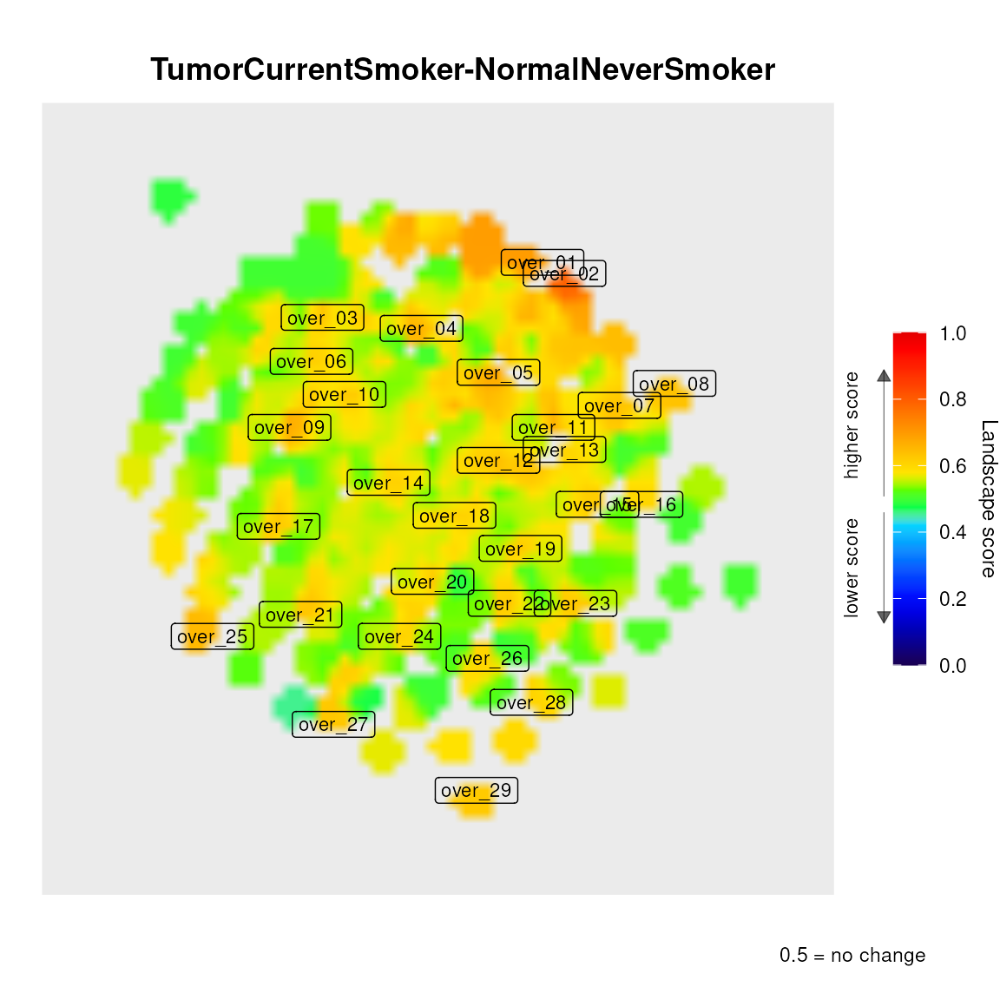
# Top 10 most altered genes in the network
head(result$scores, 10)## Gene X Y LandscapeScore Rank
## 1 OGDHL 0.3323616 0.1683213 0.7768 1
## 2 IDH1 0.2850717 0.1341222 0.6944 2
## 3 IDH2 0.2352682 0.1331376 0.6678 3
## 4 DLAT 0.1228036 0.3618685 0.6486 4
## 5 FH 0.3917084 0.2269471 0.6327 5
## 6 PDHA2 0.3384309 0.2020927 0.6325 6
## 7 SDHC 0.2797636 0.4590206 0.6221 7
## 8 MDH1 0.3203979 0.2105595 0.5974 8
## 9 PDHA1 0.2585272 0.1312074 0.5960 9
## 10 IDH3A 0.2843243 0.3034554 0.5852 10The scores table contains columns Gene,
X, Y, LandscapeScore (0–1), and
Rank. Genes with scores > 0.7 are candidates for
up-regulated hub regions; genes with scores < 0.3 are down-regulated
hubs.
Peaks (local maxima) and valleys (local minima) are detected
automatically and returned in result$peaks. Each row
reports the nearest gene, the matrix position, and the landscape
score.
# Detected peaks (up-regulated regions) and valleys (down-regulated)
result$peaks## Type NearestGene MatrixRow MatrixCol Score
## 1 peak OGDHL 48 16 0.7910
## 2 peak MDH1 42 25 0.6726
## 3 peak CS 23 30 0.6705To distinguish visually prominent features from statistical noise,
use n_perm to run a permutation test. Measured expression
values are randomly shuffled among network nodes, edge signals are
recalculated and the landscape is rebuilt each time. The layout remains
fixed.
By default (inference_unit = "region") the
eight-connected regions beyond the neutral score are redetected in every
permutation and each observed region is compared with the largest
regional mass seen under the null (Westfall and
Young 1993; Nichols and Holmes 2002), over both directions.
result$regions$summary gains PSpatial and
Significant, and significant regions are outlined in white
on the plot. The legacy inference_unit = "cell" tests every
grid cell and draws contours from BY-adjusted p-values; it is what the
graphical interface uses. The vignette levi_inference
explains which null answers which question.
result_sig <- levi(
networkCoordinatesInput = template_network,
expressionInput = template_expression,
fileTypeInput = "dat",
geneSymbolInput = "ID",
readExpColumn = readExpColumn("TumorCurrentSmoker-NormalNeverSmoker"),
n_perm = 100, # more permutations improve p-value resolution
sig_level = 0.05,
perm_side = "both" # "over", "under", or "both" (default)
)## There are 1 nodes without expression value, see log in path: /tmp/RtmpFp7ZSj/TumorCurrentSmoker-NormalNeverSmoker/levi.log## Permutation test: 100 iterations for 'TumorCurrentSmoker-NormalNeverSmoker'...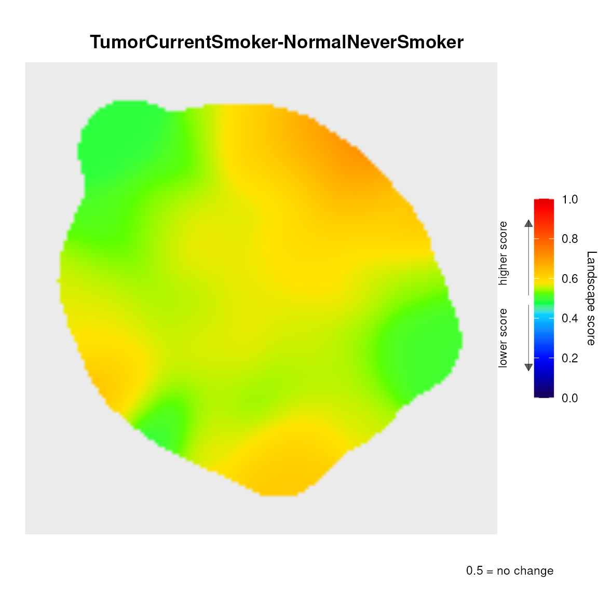
# One row per region, with its permutation p-value:
result_sig$regions$summary[, c("Region", "Direction", "Cells", "Mass",
"PSpatial", "Significant")]## Region Direction Cells Mass PSpatial Significant
## 1 over_01 over 1137 0.0059606740 0.2574257 FALSE
## 2 over_03 over 288 0.0005096155 0.9405941 FALSE
## 3 over_02 over 107 0.0001561263 0.9702970 FALSEWith inference_unit = "cell",
result$pvalues holds the $over and
$under adjusted p-value matrices instead, and the landscape
overlays two contours:
| Contour | Line style | Meaning |
|---|---|---|
| Dashed (white) | perm_side = "over" |
Significantly over-expressed region (p_over < 0.05) |
| Dotted (white) | perm_side = "under" |
Significantly under-expressed region (p_under < 0.05) |
Use perm_side = "both" (default) to show both
simultaneously.
Interpretation: genes inside the dashed contour are strong candidates for up-regulated pathway hubs; genes inside the dotted contour are down-regulated hubs. Both boundaries are calibrated against a null distribution from random label shuffling, controlling for network topology effects.
The node-label p-value above is conditional on the network and on its layout. It asks whether the observed arrangement of the same values is unusually clustered, so it says nothing about replication, and a different drawing of the same graph is a different test. Two consequences matter in practice:
When biological replicates are available, we recommend reporting the landscape together with two sample-label tests, which permute condition labels across replicates instead of values across nodes:
leviReplicateInference() keeps the landscape and its
regions but recomputes the fold-change from permuted labels, so
PSpatial now answers whether the region replicates.leviGraphTFCEInference() needs no layout at all. It
fits a limma moderated t per gene (Smyth
2004) and integrates it over every threshold with threshold-free
cluster enhancement (Smith and Nichols
2009) on the network components, controlling the family-wise
error rate with the maximum over genes and directions. It is the more
powerful of the two and is unaffected by the layout, so it is the
natural confirmatory test for a region seen on the landscape.With four replicates per group the example below is small enough to
enumerate all choose(8, 4) = 70 label arrangements, so the
smallest attainable p-value is 1/70.
hub_net <- system.file("extdata", "hub_network.dat", package = "levi")
genes <- c("HUB", paste0("N", 1:8))
# Four control and four treated replicates on a log2 scale; the hub and its
# first two neighbours respond.
set.seed(2026)
expression <- matrix(rnorm(9 * 8, mean = 6, sd = 0.3), 9, 8,
dimnames = list(genes, paste0("s", 1:8)))
groups <- rep(c("control", "treated"), each = 4)
expression[c("HUB", "N1", "N2"), groups == "treated"] <-
expression[c("HUB", "N1", "N2"), groups == "treated"] + 1.5
# Landscape regions tested against biological replication
rep_res <- leviReplicateInference(
expression, groups, test = "treated", control = "control",
networkCoordinatesInput = hub_net, fileTypeInput = "dat",
resolutionValueInput = 20, smoothValueInput = 30, seed = 1)
rep_res$regions$summary[, c("Region", "Direction", "Mass", "PSpatial",
"Significant")]## Region Direction Mass PSpatial Significant
## 1 over_03 over 0.033651593 0.02857143 TRUE
## 2 over_05 over 0.003513050 0.48571429 FALSE
## 3 over_04 over 0.002689098 0.48571429 FALSE
## 4 over_02 over 0.002476661 0.48571429 FALSE
## 5 over_01 over 0.002083346 0.48571429 FALSE
# Layout-free confirmation: graph TFCE with the same null
tfce <- leviGraphTFCEInference(
expression, groups, hub_net, test = "treated", control = "control",
seed = 1)
tfce$statistic[order(tfce$statistic$PGlobal), ][1:4, ]## Gene T TFCE POver PUnder PGlobal GlobalSignificant
## HUB HUB 8.219189 264.0536523 0.01428571 1 0.02857143 TRUE
## N1 N1 6.796803 180.1085001 0.01428571 1 0.02857143 TRUE
## N2 N2 6.741273 180.1085001 0.01428571 1 0.02857143 TRUE
## N4 N4 1.009317 0.7337502 0.58571429 1 0.80000000 FALSEBoth tests find the hub and its two responding neighbours; the
node-label test alone could not have told us that this replicates. For
paired designs pass blocks; for single-cell data use the
leviSingleCell* functions, which permute donors rather than
cells. The vignette levi_inference explains the three nulls
in detail and levi_validation reports their calibration and
power.
levi can visualize single-cell marker genes from Seurat (Hao et al. 2021) on biological networks, enabling pathway-level interpretation of cell-type-specific expression.
library(Seurat)
library(levi)
# Find markers for a specific cell cluster:
markers <- FindMarkers(seurat_obj,
ident.1 = "TumorCluster",
ident.2 = "NormalCluster")
expr_df <- leviFromSeurat(markers, gene_col = "GeneSymbol")
levi(
expressionInput = expr_df,
networkCoordinatesInput = template_network,
fileTypeInput = "dat",
geneSymbolInput = "GeneSymbol",
readExpColumn = readExpColumn("Test-Control"),
expressionLog = TRUE,
plot3d = TRUE
)levi ships several small toy datasets in
inst/extdata/ with known expected results, designed to
validate specific features independently.
| Dataset pair | Topology | What it tests |
|---|---|---|
hub_network +
hub_expression
|
Star (9 nodes) | Score highest at hub; Gaussian smoothing propagation |
gradient_network +
gradient_expression
|
Linear chain (6 nodes) | Strict monotone ordering of scores |
bimodal_network +
bimodal_expression
|
Two stars + bridge (13 nodes) | Simultaneous peak + valley; leviDiff
|
flat_network +
flat_expression
|
3×3 grid (9 nodes) | No false-positive peaks; uniform expression |
logfc_network +
logfc_expression
|
Linear chain, log2 intensities |
signal_mode = "logfc" contrast
improvement |
hub_multicomp_expression |
Reuses hub network | Batch mode; leviGrid;
leviDiff
|
sparse_network +
sparse_expression
|
Chain (15 nodes, 5 expressed) | NA handling; missing gene neutrality |
Two distinct hubs (over-expressed cluster A and under-expressed
cluster B) connected by a neutral bridge gene. The expected landscape
shows a peak on the left and a valley on the right — ideal for
validating leviDiff.
bimodal_net <- file.path(system.file(package="levi"), "extdata",
"bimodal_network.dat")
bimodal_expr <- file.path(system.file(package="levi"), "extdata",
"bimodal_expression.dat")
res_bimodal <- levi(
networkCoordinatesInput = bimodal_net,
expressionInput = bimodal_expr,
fileTypeInput = "dat",
geneSymbolInput = "ID",
readExpColumn = readExpColumn("Test-Control"),
contrastValueInput = 50,
resolutionValueInput = 20,
zoomValueInput = 50,
smoothValueInput = 5,
contourLevi = TRUE
)## Warning: `stat_contour()`: Zero contours were generated## Warning in min(x): no non-missing arguments to min; returning Inf## Warning in max(x): no non-missing arguments to max; returning -Inf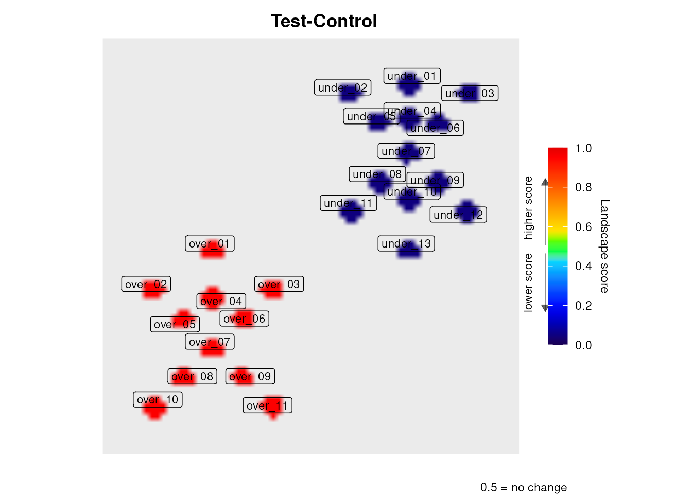
The logfc_expression dataset simulates RMA-normalized
microarray data (log2 intensities ranging 5–8), where
signal_mode = "logfc" produces a wider score range than
signal_mode = "ratio" because it captures the direction and
magnitude of fold-change explicitly.
logfc_net <- file.path(system.file(package="levi"), "extdata",
"logfc_network.dat")
logfc_expr <- file.path(system.file(package="levi"), "extdata",
"logfc_expression.dat")
res_logfc <- levi(
networkCoordinatesInput = logfc_net,
expressionInput = logfc_expr,
fileTypeInput = "dat",
geneSymbolInput = "ID",
readExpColumn = readExpColumn("Test-Control"),
signal_mode = "logfc",
contrastValueInput = 50,
resolutionValueInput = 20,
zoomValueInput = 50,
smoothValueInput = 5,
contourLevi = TRUE
)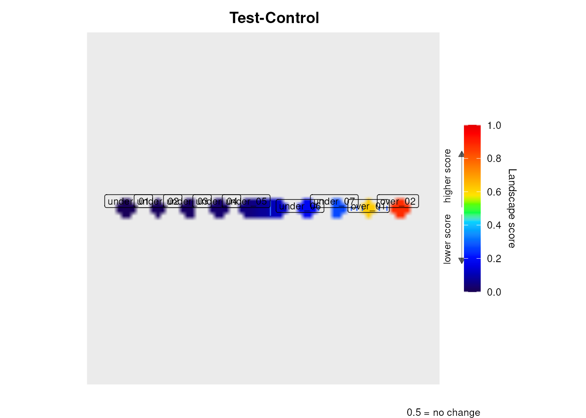
## Score range with logfc mode: 0.874The hub_multicomp_expression dataset has three
conditions for the hub network. Using batch mode produces one landscape
per comparison; leviDiff() subtracts them cell-by-cell to
reveal regional changes between conditions.
hub_net <- file.path(system.file(package="levi"), "extdata", "hub_network.dat")
mc_expr <- file.path(system.file(package="levi"), "extdata",
"hub_multicomp_expression.dat")
# Batch mode: two comparisons in one call
res_multi <- levi(
networkCoordinatesInput = hub_net,
expressionInput = mc_expr,
fileTypeInput = "dat",
geneSymbolInput = "ID",
readExpColumn = readExpColumn("Cond_A-Cond_B", "Cond_A-Cond_C"),
resolutionValueInput = 20,
smoothValueInput = 5
)
# Side-by-side
leviGrid(res_multi)
# Regional difference between conditions B and C
leviDiff(res_multi[[1]], res_multi[[2]],
label_a = "Cond_A vs Cond_B",
label_b = "Cond_A vs Cond_C")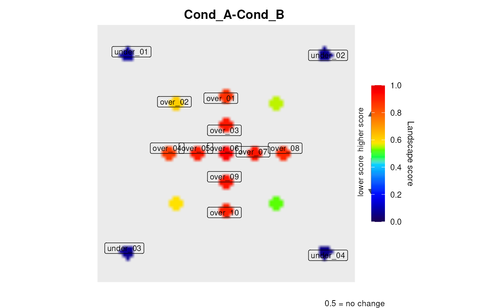
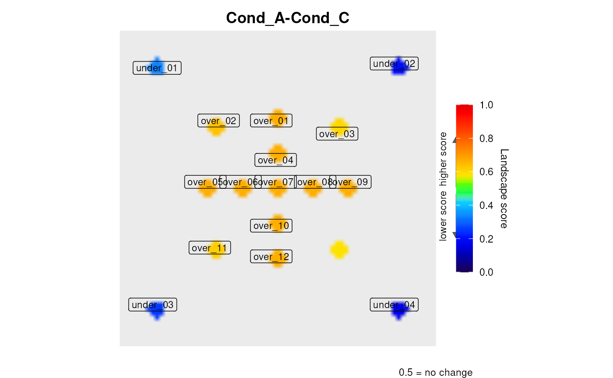
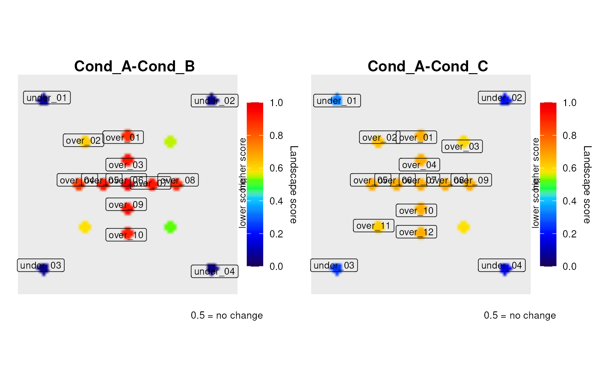
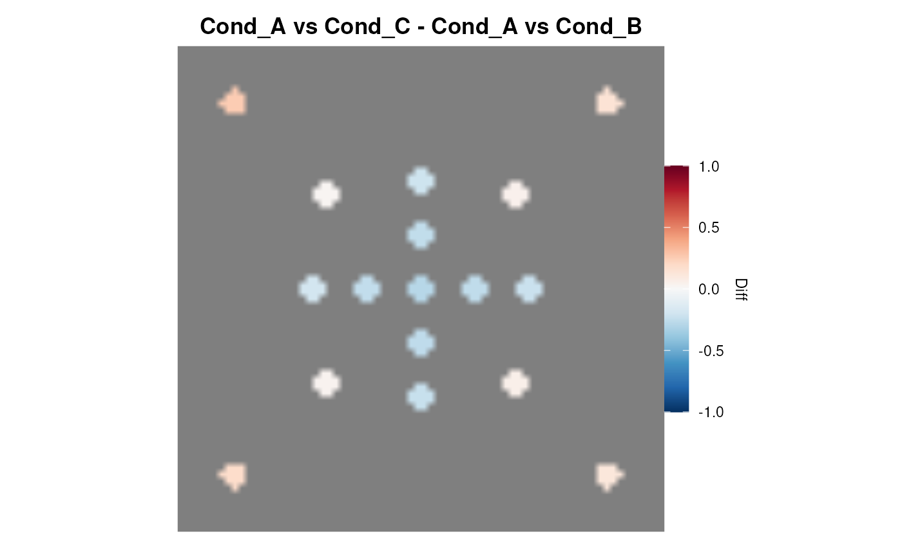
The examples below use publicly available datasets to demonstrate levi across different experiment types.
The airway dataset (Himes et al.
2014) contains RNA-seq counts from airway smooth muscle cells
treated with dexamethasone (DEX) vs untreated controls across 4 cell
lines. DESeq2 identifies differentially expressed genes;
leviFromSTRING() builds the interaction network
automatically.
BiocManager::install(c("airway", "DESeq2", "STRINGdb"))
library(airway); library(DESeq2); library(levi)
data(airway)
dds <- DESeqDataSet(airway, design = ~cell + dex)
dds <- DESeq(dds)
res <- results(dds, contrast = c("dex", "trt", "untrt"))
# Convert to levi input
expr_df <- leviFromDESeq2(res)
# Top 80 DE genes — build STRING network
top80 <- head(expr_df$GeneID[order(abs(expr_df$log2FoldChange),
decreasing = TRUE)], 80)
set.seed(42)
net <- leviFromSTRING(top80, species = 9606, score_threshold = 400)
# Landscape: which network hubs respond to DEX treatment?
levi(
expressionInput = expr_df,
networkCoordinatesInput = net$nodes,
networkInteractionsInput = net$edges,
fileTypeInput = "stg",
geneSymbolInput = "GeneID",
readExpColumn = readExpColumn("log2FoldChange-log2FoldChange"),
signal_mode = "logfc",
n_perm = 500,
perm_side = "both"
)The ALL dataset (Chiaretti et al.
2004) contains Affymetrix HG-U95Av2 microarray data from 128
Acute Lymphoblastic Leukemia patients. RMA-normalized values are in log2
scale, making signal_mode = "logfc" the natural choice.
BiocManager::install(c("ALL", "limma", "STRINGdb"))
library(ALL); library(limma); library(levi)
data(ALL)
# B-cell vs T-cell subtypes
design <- model.matrix(~0 + ALL$BT)
colnames(design) <- c("B", "T")
contrast <- makeContrasts(B - T, levels = design)
fit <- lmFit(ALL, design)
fit2 <- contrasts.fit(fit, contrast)
fit2 <- eBayes(fit2)
expr_df <- leviFromLimma(fit2, coef = 1)
set.seed(7)
net <- leviFromSTRING(expr_df$GeneID, species = 9606,
score_threshold = 700, # high confidence
layout = "kk") # Kamada-Kawai for <100 nodes
levi(
expressionInput = expr_df,
networkCoordinatesInput = net$nodes,
networkInteractionsInput = net$edges,
fileTypeInput = "stg",
geneSymbolInput = "GeneID",
readExpColumn = readExpColumn("logFC-logFC"),
signal_mode = "logfc",
logfc_k = 2 # tighter FC range in microarray
)Single-cell RNA-seq data from 3k PBMCs of a healthy donor (10x Genomics 2016).
FindMarkers() computes avg_log2FC values per
gene for a given cell type contrast, which are fed directly into levi
using single-column logFC mode.
BiocManager::install(c("TENxPBMCData", "STRINGdb"))
install.packages("Seurat")
library(TENxPBMCData); library(Seurat); library(levi)
pbmc_sce <- TENxPBMCData("pbmc3k")
pbmc <- as.Seurat(pbmc_sce)
# Standard Seurat pipeline
pbmc <- NormalizeData(pbmc)
pbmc <- FindVariableFeatures(pbmc)
pbmc <- ScaleData(pbmc)
pbmc <- RunPCA(pbmc)
pbmc <- FindNeighbors(pbmc)
pbmc <- FindClusters(pbmc, resolution = 0.5)
# Markers between two clusters (e.g., T cells vs B cells after annotation)
markers <- FindMarkers(pbmc,
ident.1 = "CD4 T cells",
ident.2 = "B cells",
min.pct = 0.25)
expr_df <- leviFromSeurat(markers, gene_col = "row.names")
set.seed(21)
net <- leviFromSTRING(
rownames(markers), species = 9606,
score_threshold = 400,
layout = "fr"
)
levi(
expressionInput = expr_df,
networkCoordinatesInput = net$nodes,
networkInteractionsInput = net$edges,
fileTypeInput = "stg",
geneSymbolInput = "GeneID",
readExpColumn = readExpColumn("avg_log2FC-avg_log2FC"),
signal_mode = "logfc",
logfc_k = 0.5 # softer gradient for large FC values
)levi can retrieve a protein interaction network
directly from the STRING database
(Szklarczyk et al. 2021) using the
leviFromSTRING() function, which wraps the
STRINGdb Bioconductor package. This eliminates the need to
manually download and format network files.
BiocManager::install("STRINGdb")
library(levi)
# Human MAPK pathway genes
mapk_genes <- c("EGFR", "KRAS", "BRAF", "MAP2K1", "MAPK1", "MAPK3",
"RPS6KA1", "MYC", "JUN", "FOS")
set.seed(42) # layout is stochastic; set seed for reproducibility
net <- leviFromSTRING(
genes = mapk_genes,
species = 9606, # 9606 = human
score_threshold = 400, # medium confidence
layout = "fr" # Fruchterman-Reingold layout
)
# net$nodes : data.frame — gene symbol, x, y
# net$edges : data.frame — V1, V2 (interacting pairs)
# net$graph : igraph object (for custom layouts / diagnostics)
# Visualise with your expression data
levi(
expressionInput = my_de_results,
networkCoordinatesInput = net$nodes,
networkInteractionsInput = net$edges,
fileTypeInput = "stg",
geneSymbolInput = "GeneID",
readExpColumn = readExpColumn("Tumor-Normal"),
signal_mode = "logfc",
n_perm = 500
)leviFromSTRING() returns a plain R list, so the network
can be saved to disk and reloaded in future sessions — avoiding repeated
downloads.
# --- Download once ---
set.seed(42)
net <- leviFromSTRING(mapk_genes, species = 9606, score_threshold = 400)
# Option 1: save as TSV files — readable by levi() directly via file path
write.table(net$nodes, "string_nodes.tsv",
sep = "\t", row.names = FALSE, quote = FALSE)
write.table(net$edges, "string_edges.tsv",
sep = "\t", row.names = FALSE, quote = FALSE)
# Option 2: save the full R object (preserves igraph + coordinates)
saveRDS(net, "string_network.rds")
# --- Reload in a later session ---
# From TSV files (fileTypeInput = "stg" accepts file paths or data.frames)
levi(
networkCoordinatesInput = "string_nodes.tsv",
networkInteractionsInput = "string_edges.tsv",
fileTypeInput = "stg",
...
)
# From the RDS object
net <- readRDS("string_network.rds")
levi(
networkCoordinatesInput = net$nodes,
networkInteractionsInput = net$edges,
fileTypeInput = "stg",
...
)Tip — persistent STRINGdb cache: pass a fixed
input_directory to leviFromSTRING() so the raw
STRING files are stored locally and reused across sessions without
re-downloading:
net <- leviFromSTRING(
genes = my_genes,
species = 9606,
input_directory = "~/.stringdb_cache" # persists between R sessions
)layout |
Algorithm | Best for |
|---|---|---|
"fr" |
Fruchterman-Reingold (Fruchterman and Reingold 1991) | General use, 50–500 nodes |
"kk" |
Kamada-Kawai (Kamada and Kawai 1989) | Small networks (≤ 100 nodes) — better aesthetics |
"lgl" |
Large Graph Layout | Large networks (> 500 nodes) |
"dh" |
Davidson-Harel | High quality, slower |
"circle" |
Ring | Pathway-like linear chains |
| Organism | species |
|---|---|
| Human (H. sapiens) | 9606 |
| Mouse (M. musculus) | 10090 |
| Rat (R. norvegicus) | 10116 |
| Zebrafish (D. rerio) | 7955 |
| Fly (D. melanogaster) | 7227 |
| Worm (C. elegans) | 6239 |
| Yeast (S. cerevisiae) | 4932 |
library(airway)
library(DESeq2)
library(levi)
# 1. Differential expression
data(airway)
dds <- DESeqDataSet(airway, design = ~cell + dex)
dds <- DESeq(dds)
res <- results(dds, contrast = c("dex", "trt", "untrt"))
# 2. Build expression data.frame
expr_df <- leviFromDESeq2(res)
# 3. Retrieve STRING network for top DE genes
top_genes <- head(expr_df$GeneID[order(abs(expr_df$log2FoldChange),
decreasing = TRUE)], 100)
set.seed(42)
net <- leviFromSTRING(top_genes, species = 9606, score_threshold = 400)
# 4. Visualise landscape
levi(
expressionInput = expr_df,
networkCoordinatesInput = net$nodes,
networkInteractionsInput = net$edges,
fileTypeInput = "stg",
geneSymbolInput = "GeneID",
readExpColumn = readExpColumn("log2FoldChange-log2FoldChange"),
signal_mode = "logfc",
n_perm = 500,
perm_side = "both"
)## R version 4.6.1 (2026-06-24)
## Platform: x86_64-pc-linux-gnu
## Running under: Ubuntu 24.04.4 LTS
##
## Matrix products: default
## BLAS: /usr/lib/x86_64-linux-gnu/openblas-pthread/libblas.so.3
## LAPACK: /usr/lib/x86_64-linux-gnu/openblas-pthread/libopenblasp-r0.3.26.so; LAPACK version 3.12.0
##
## locale:
## [1] LC_CTYPE=en_US.UTF-8 LC_NUMERIC=C
## [3] LC_TIME=en_US.UTF-8 LC_COLLATE=en_US.UTF-8
## [5] LC_MONETARY=en_US.UTF-8 LC_MESSAGES=en_US.UTF-8
## [7] LC_PAPER=en_US.UTF-8 LC_NAME=C
## [9] LC_ADDRESS=C LC_TELEPHONE=C
## [11] LC_MEASUREMENT=en_US.UTF-8 LC_IDENTIFICATION=C
##
## time zone: Etc/UTC
## tzcode source: system (glibc)
##
## attached base packages:
## [1] stats graphics grDevices utils datasets methods base
##
## other attached packages:
## [1] levi_1.99.0 BiocStyle_2.40.0
##
## loaded via a namespace (and not attached):
## [1] SummarizedExperiment_1.42.0 gtable_0.3.6
## [3] xfun_0.61 bslib_0.12.0
## [5] ggplot2_4.0.3 htmlwidgets_1.6.4
## [7] Biobase_2.72.0 lattice_0.23-1
## [9] vctrs_0.7.3 tools_4.6.1
## [11] generics_0.1.4 stats4_4.6.1
## [13] parallel_4.6.1 tibble_3.3.1
## [15] pkgconfig_2.0.3 Matrix_1.7-6
## [17] RColorBrewer_1.1-3 S7_0.2.2
## [19] desc_1.4.3 S4Vectors_0.50.3
## [21] lifecycle_1.0.5 compiler_4.6.1
## [23] farver_2.1.2 stringr_1.6.0
## [25] textshaping_1.0.5 statmod_1.5.2
## [27] Seqinfo_1.2.0 codetools_0.2-20
## [29] htmltools_0.5.9 sass_0.4.10
## [31] yaml_2.3.12 pkgdown_2.2.1
## [33] pillar_1.11.1 jquerylib_0.1.4
## [35] BiocParallel_1.46.0 limma_3.68.5
## [37] DelayedArray_0.38.2 cachem_1.1.0
## [39] abind_1.4-8 tidyselect_1.2.1
## [41] digest_0.6.39 stringi_1.8.9
## [43] dplyr_1.2.1 reshape2_1.4.5
## [45] bookdown_0.48 labeling_0.4.3
## [47] fastmap_1.2.0 grid_4.6.1
## [49] cli_3.6.6 SparseArray_1.12.2
## [51] magrittr_2.0.5 patchwork_1.3.2
## [53] S4Arrays_1.12.0 withr_3.0.3
## [55] scales_1.4.0 rmarkdown_2.32
## [57] XVector_0.52.0 matrixStats_1.5.0
## [59] igraph_2.3.3 otel_0.2.0
## [61] ragg_1.5.2 evaluate_1.0.5
## [63] knitr_1.52 GenomicRanges_1.64.0
## [65] IRanges_2.46.0 rlang_1.3.0
## [67] isoband_0.3.0 Rcpp_1.1.2
## [69] glue_1.8.1 xml2_1.6.0
## [71] BiocManager_1.30.27 BiocGenerics_0.58.1
## [73] jsonlite_2.0.0 R6_2.6.1
## [75] plyr_1.8.9 MatrixGenerics_1.24.0
## [77] systemfonts_1.3.2 fs_2.1.0Signal interpretation: ratio preserves Test/(Test +
Control), with no min-max rescaling; equal nonzero inputs give 0.5.
expressionLog = TRUE back-transforms log2 inputs only in
this mode. A single ratio column means abundance/(abundance + 1), not a
comparison with a control. logfc accepts two log-scale
columns or one already computed logFC, mapping zero to 0.5.
zscore centres on the mean logFC of measured network
support points, not on biological absence of change. Missing
measurements are assigned 0.5 and listed in
result$metadata. Gaussian smoothing mixes neighbouring
signals, so these baseline statements apply to the input signals and to
uniformly neutral networks.
Permutation inference is conditional on the fixed network and layout.
Measured gene values are shuffled as pairs and edge midpoints are
recalculated; missing positions stay fixed. In the default regional mode
the maximum regional mass over both directions is the reference
statistic, which controls the search across regions without a further
adjustment. In cell mode both tails over occupied cells form one
multiple-testing family per comparison, adjusted with
p_adjust_method (“BY” by default);
result$raw_pvalues retains the unadjusted values.
perm_side selects the displayed side without changing
either family. This is not a test of differential expression between
biological replicates; increasing n_perm alone does not
validate inferential use. Calibration across networks, layouts and
missingness patterns still requires simulation studies.
Call set.seed() before permutation runs.
result$metadata records the RNG state, network,
coordinates, signal mode, grid settings and software versions.
leviDiff() rejects incompatible metadata or grid
coordinates. For DESeq2, edgeR and limma adapters, select the logFC
column against itself with signal_mode = "logfc"; abundance
annotations are not control measurements. For edgeR, select the contrast
in glmLRT() or glmQLFTest() before calling
leviFromEdgeR() on the resulting test object. KEGG uses the
supplied universe, converting both selected genes and background to
ENTREZID with the same OrgDb.